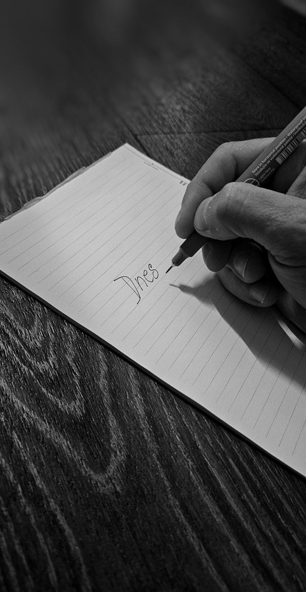

Za 24 hodin zpátky v sedle
Vrať se do sedla za jeden den
Jednodenní protokol. Jasné kroky, žádné výmluvy.
Tělo → práce → klid → zápis do deníku.

RÁNO
Hodí se ti mrknout na stránku stoický deník (stáhni si ho tady).
DOPOLEDNE
Blok 90/15. 90 minut pracuješ soustředěně na jednom úkolu, 15 minut si dáš pauzu - projdeš se a odreaguješ se. Mobil máš mimo stůl.
POLEDNE
10 minut chůze bez mobilu. Jen tvůj dech, krok a souznění se zemí. Dáš si krátké protažení nebo studenou sprchu, pokud máš tu možnost.
Mrkni na článek ranní chůzi – nejjednodušší reset.
ODPOLEDNE
Druhý blok 90/15. Na začátku si vytyč 3 mini-cíle, na konci si zaškrtni, zda jsi je splnil.
Co příště udělám jinak?
VEČER
PROČ TO FUNGUJE?
Neřešíš svou náladu, řešíš aby to šlapalo. Tělo v pohybu nastartuje tvůj mozek, soustředění nastartuje výkon, klid zase spánek a zápis do deníku další den.
RYCHLÁ POMOC (5 minut)
- Vypusť a odstraň rušivé věci ze svého dohledu a života.
- Zamakej si - třeba 20 pomalých kliků.
- Napiš si 1 větu do deníku: „Dneska jsem vyhrál nad ___.“
DRŽ RYTMUS, I KDYŽ SE TI NECHCE
Není to o náladě. Není to o tom, jestli máš chuť nebo ne. Je to o tom, že uděláš to, co sis řekl. Jeden krok za druhým – i když jsi unavený, i když tě to nebaví. Právě v těch chvílích se tvoří tvoje síla. Tam se rodí chlap, který se nezlomí hned při prvním odporu.
Nepotřebuješ čekat na pondělí, na nový rok nebo na “lepší náladu”. Všechno, co máš, je dnešek. A v něm stačí udělat jednu jedinou věc – začít znovu. To je celé kouzlo návratu do sedla.